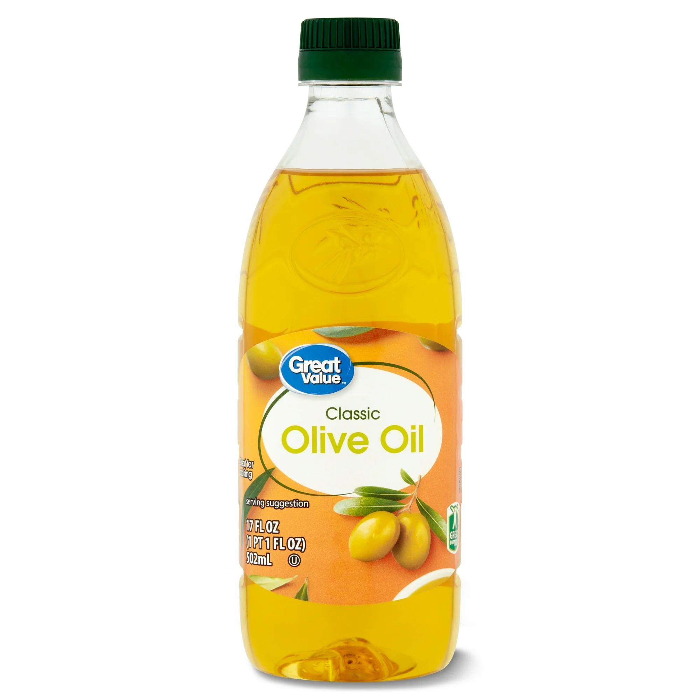

Preparação pra Emergência
Todo mês faça alguma coisa!
| Mês | Comida | Água | Outro |
|---|---|---|---|
| Janeiro | Arroz | 4 litros por dia por pessoa | Abrigo, roupas, roupas de cama |
| Fevereiro | Feijão | Um bom filtro de água | Água em garrafa |
| Março | Massa | Jarros de água portáteis | Mais comida |
| Abril | Farinha de Trigo | Comprimidos de água | Higiene e Saneamento |
| Maio | Açúcar | Garrafas de água de 20 litros | Luzes e energia |
| Junho | Sopas enlatadas/Outras | 24 garrafas de água | Kit de Primeiro socorro |
| Julho | Óleo de cozinha | Mais Água | Comunicação |
| Agosto | Temperos | Mais Água | Segurança e Proteção |
| Setembro | Frutas/Vegetais Enlatados | Mais Água | Itens pessoais |
| Outubro | Leite em pó/bebida | Mais Água | Fogão/Outros |
| Novembro | Lanches | Mais Água | Documentos e Dinheiro |
| Dezembro | Carnes enlatadas | Mais papel higiênico | Transporte |
Itens de Julho
Comida
Resumo
Armazenamento para 2 meses focado em gorduras e óleos essenciais. Inclua azeite, óleo de cozinha, manteiga em pó, pasta de amendoim e maionese para uma dieta equilibrada e saudável.
Água

Itens Essenciais
- Água potável armazenada em recipientes limpos e próprios
- Rotação periódica para manter qualidade
- Armazenamento em local fresco e protegido da luz
Comunicação

Resumo
Inclua rádios meteorológicos, rádios bidirecionais e celulares que funcionem para emergências. Rádios oferecem aviso de tempestades, carregamento e comunicação mesmo quando o celular falha.
Este ano é o último de um esforço de três anos para preparar cada família com suprimentos de emergência em caso de interrupções/desastres. "Se estivermos preparados, não temereis." Podemos ajudar nossas próprias famílias e seremos mais capazes de ajudar (amar) nossos vizinhos também. Por favor, faça algo a cada mês para alcançar isso. A meta de um "suprimento de emergência de 2 meses (ou mais)".
Começar por fazendo um inventário do que você já tem para ter um plano claro do que você precisa no frente. Concentre-se seriamente em adquirir algo que você precisa todos os meses, durante todo o ano, em 2025, até atingir a meta de 2 meses. Cada casa tem gostos e necessidades diferentes. Faça o que for melhor para você.
Perguntaremos periodicamente ao longo do ano como você está se saindo em relação à meta. Pense em maneiras de se recompensar pelo progresso no caminho para alcançar seu objetivo. Lembre-se sempre: este não é apenas um objetivo temporal, é também um objetivo espiritual, porque o Senhor abençoa aqueles que são obedientes/preparados!